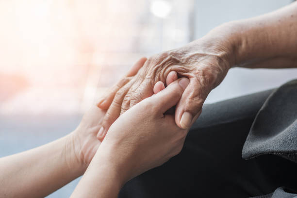

It is a great honor to take care of those who once took care of us. We treat our customers as if they were our family.
Kanlungan Ltd.


Who are we
We offer individual home health care in the Helsinki metropolitan area. We also provide home care support services such as personal assistance, cleaning, shopping services and clothing care services. We enable a quality life at home when one's own resources begin to decline. We support the realization of the client's right to self-determination in planning care.
Our Services
Our home care and home nursing services are designed to deliver professional, reliable support that enables clients to live safely and comfortably in their own homes. We provide comprehensive home care support services, including personal assistant services, cleaning services, boarding support, and clothing care services tailored to individual needs. Our goal is to ensure high-quality, person-centered care that promotes independence, dignity, and peace of mind for both clients and their families.